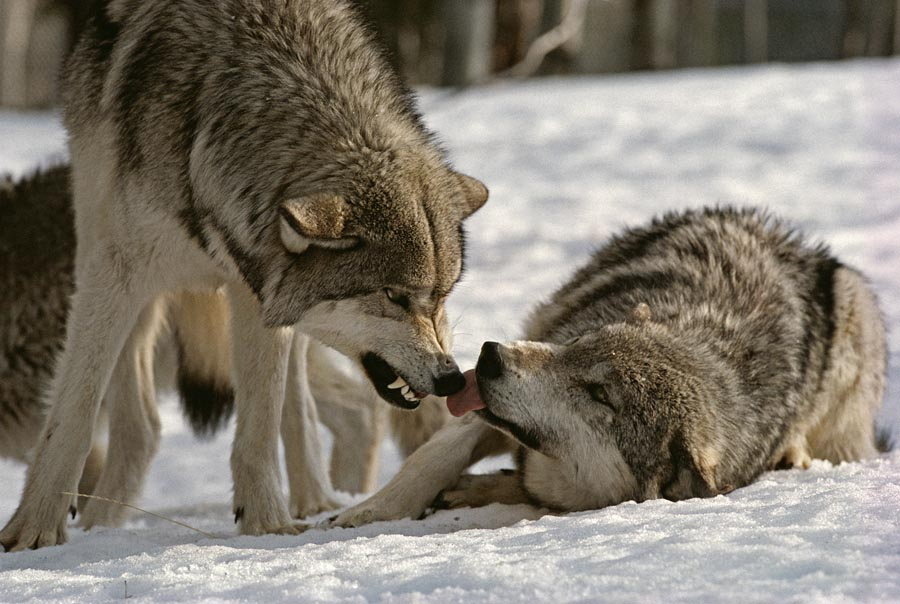
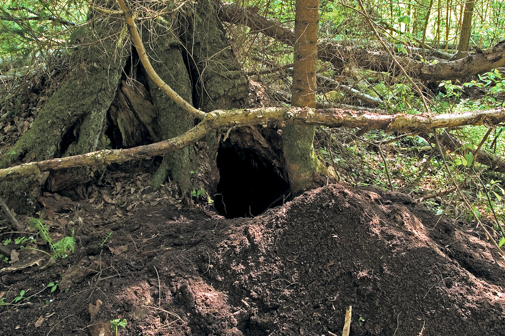
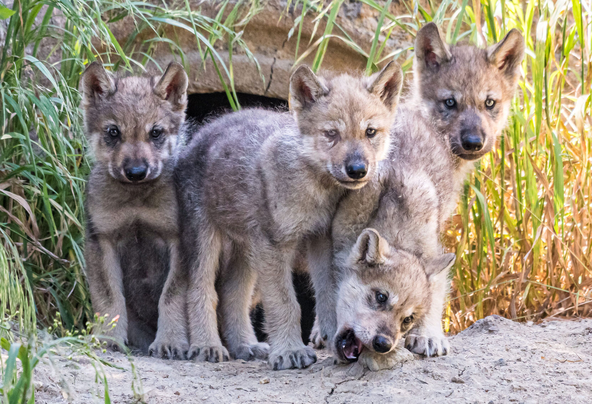
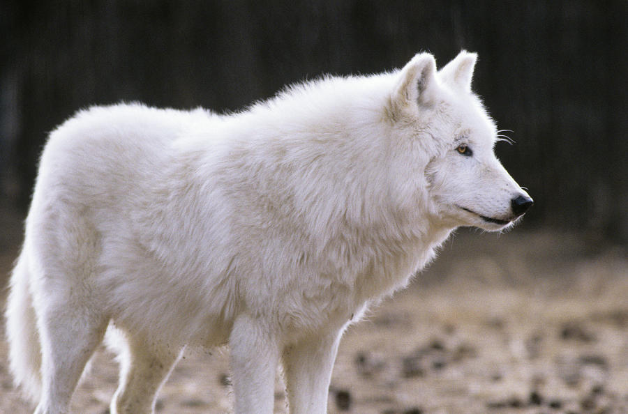
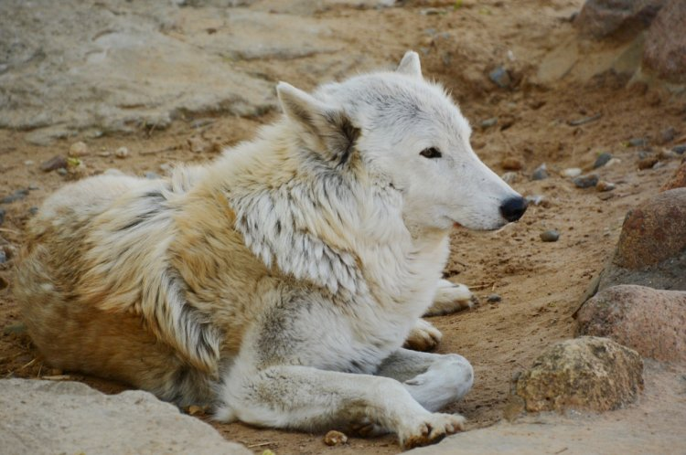
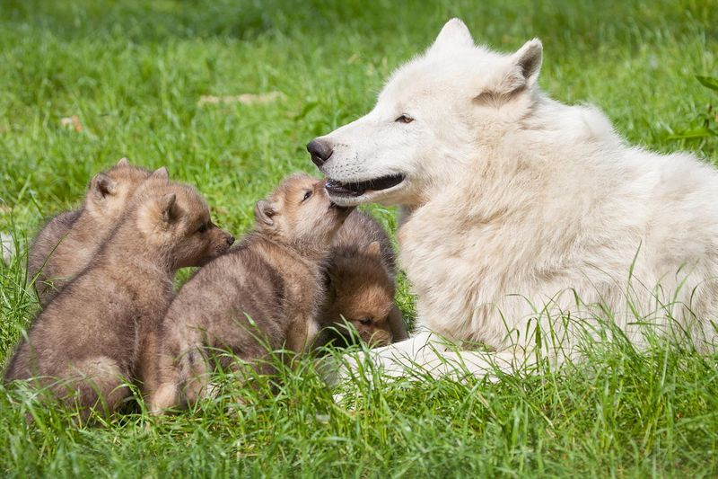

Homepage Wolves Foxes Coyote, Tanuki, And Maned Wolf Quiz Canine Images
Do you have a pet dog? Well, if you do, you have a little wolf in your house! The Domestic Dog, also known as Canis Familiaris, or Canis Lupus Familiaris, is a subspecies of the Gray Wolf, which is also known as Canis Lupus. Here is a picture of a gray wolf:

The Gray Wolf is a carnivore native to North America, with a lifespan of 14-16 years. The average body size of this beautiful gray animal is 3-5 feet long with a tail length of 1-2 feet. The average weight range for a female Gray Wolf is 60-100 pounds, and for males, 70-145 pounds. Their favorite food is hoofed mammals, although they occasionally eat smaller mammals as well. They communicate through body language, scent marking, barking, growling, and howling. Most of their communication is about the specific individual's status in the pack, or to warn other packs that this is their territory, not the other pack's. When a wolf is showing it's submissive to another wolf, it will crouch, whimper, tuck in its tail, lick the other wolf's mouth, or roll over onto its back. However, when a wolf wants to show that it is dominant, or wants to challenge another wolf, it will growl or lay its ears back on its head. Their C9onservation Status is Endangered. Here is a picture of a dominant and submissive wolf. The one standing up is dominant, and the one laying on its side is showing submission:
If a wolf is playful, it will dance and bow. Barking is used as a warning, and howling is used for long-distance communication to pull a pack back together and to keep stranger wolves away. They usually make their dens near water and dug into well-drained soil in a southward facing slope. Normally, only the alpha male and female mate. Gray Wolves typically mate for life, and they breed from late January through March. Litters of pups are born from early April into May, and normally about 4-6 pups are born. Here are pictures of a Gray Wolf den and Gray Wolf pups:
 The Arctic Wolf is one of my favorite wolves. The Arctic Wolf and Tundra Wolf, or Turukhan Wolf, are both subspecies of the Gray Wolf. The Arctic Wolf has a lifespan of 7-17 years, while the Tundra Wolf has a lifespan of around 16 years.The scientific name of the Arctic Wolf is Canis Lupus Arctos, and the scientific name of the Tundra Wolf is Canis Lupus Albus. Here are pictures of an Arctic wolf and Tundra Wolf. The first one is Arctic, and the second one is Tundra:
 Arctic Wolves inhabit the Arctic regions of North America and Greenland, while the Tundra Wolf lives in Eurasia. The average body size of an Arctic Wolf is 3-6 feet long, including the tail, and the average size of a Tundra Wolf is 7 feet, including tail. The Arctic Wolf typically weighs around 70-175 pounds, and the Tundra Wolf typically weighs 81-90 pounds. They both communicate in the same ways that the Gray Wolf does. An Arctic or Tundra Wolf den is usually in rock outcroppings, caves, or shllow depressions in tundra soil. Just like the Gray Wolf, Arctic Wolves normally mate for life, and they mate from March to April. Also like Gray Wolves, only the alpha pair of Arctic Wolves mate. Arctic Wolves typically give birth to 5-6 pups. Here is a picture of an Arctic Wolf with her pups:
